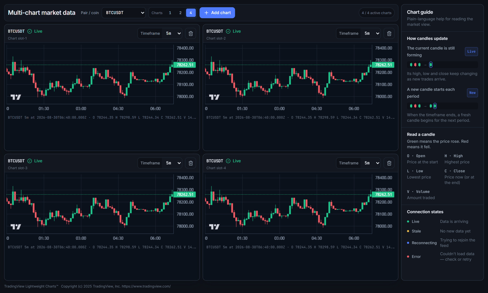

Binance Adapter
Nhận historical và realtime payload từ nguồn dữ liệu.
Normalized Candle
Chuẩn hóa OHLCV, UTC, timeframe và trạng thái đóng/mở.
Subscription Hub
Dùng chung upstream stream cho các chart cùng pair và timeframe.
Chart Slot
Mỗi ô giữ subscription riêng; đổi timeframe không làm tải lại toàn trang.
Frontend không phụ thuộc Binance DTO.